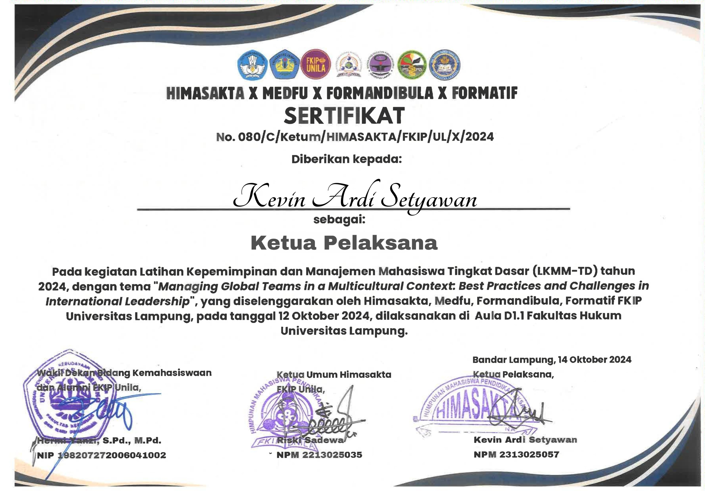

Kevin Ardi Setyawan

Jln. KH. Gholib, Gg. Cempaka, No.76
Pringsewu, Lampung
+62 857 6442 5294
kevinardisetyawan57@gmail.com
Saya adalah mahasiswa S1 Pendidikan Teknologi Informasi yang memiliki sikap proaktif dan kemampuan beradaptasi yang baik. Dengan pemahaman mendalam tentang teknologi terkini dan keterampilan komunikasi yang efektif, saya siap untuk berkontribusi dalam dunia kerja dan menghadapi tantangan di industri teknologi.
SD Fransiskus Pringsewu, 2011-2017
SMP Xaverius Pringsewu, 2017-2020
SMA Xaverius Pringsewu, 2020-2023
S1 Pendidikan Teknologi Informasi Universitas Lampung, 2023-sekarang
FORMATIF, Forum Mahasiswa Pendidikan Teknologi Informasi, periode 2024
Himasakta, Himpunan Mahasiswa Pendidikan Eksakta FKIP Universitas Lampung
Sertifikat LKMM-TD 2024
